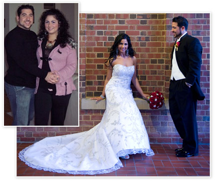

The Mystery Of "The World’s Thinnest City"
Harvard Researcher Says: "We Finally Know Why These Islanders Eat More Fatty Food Than Americans—Yet Stay Slim Well Into Their 90s... Now We Can Help Thousands Lose Weight Without Traditional Diets Or Exercise."
This Island's Secret Is A Unique Enzyme Found In Their Local Food... Now This American Doctor Has Discovered How To FORCE Your Body to Produce This Remarkable Thinning Substance

DID YOU KNOW? Your body can easily burn stubborn and diet-resistant fat. How? By eating foods that when combined and eaten at night produce large amounts of this natural “thinning enzyme.”
DID YOU KNOW? We are being lied to by the mainstream media. Forget deprivation diets. They never work. Oprah is still fat. Dr. Oz was born skinny. Let’s get real. The secret for the rest of us is eating these enzyme-triggering delicious fatty foods. Let God’s natural weight loss agent do its job!
DID YOU KNOW? Combining certain delicious fatty foods makes this enzyme work—no matter where you live. These are foods that were once “forbidden”. Doctors hate this advice. Makes them feel stupid. But they can’t argue with the results. Patients look younger, thinner, and feel fantastic!
Dear Friend,
Today you can do something about your weight and your health. Something that works fast. Relatively easy too. Nothing this effective is “easy”, but this is as easy as it will ever get. It’s also tasty and satisfying, using ordinary foods you can buy anywhere.
I write this letter to you today full of optimism. Optimism for your future. Our future – one where our nation returns to a healthy and active land.
However, I’ve been sitting back for decades watching people I love struggle with heart issues and metabolic challenges.
And so many who aren’t dying are hardly living. Just getting fatter and sicker. Aging 10 years for every year they live...if you can call that living.
This is not how God intended humankind to live...and I believe His message to you is:
"You're hurting yourself slowly. Please stop."
You know it’s true. You feel it in your bones. You can see it when you look in the mirror.
Are you thin and vibrant? Or does it hurt to get out of bed every morning? Your gut hangs over your belt. Your thighs rub together. Why step on the scale? What’s the point?
You already know the truth because you see it every day…
...and it’s getting worse.
If you’re still healthy enough to read this letter consider yourself blessed. I’m about to reveal the story of a strange little enzyme. One that your body can make on its own. One that feeds on fat. One that your body has stopped producing due to some bad stuff in our Western foods and soil.
And a simple solution that, of all the crazy things, asks you to eat more fatty foods at night.
I get it. That sounds bizarre. However, you’ll see the science. You'll see the results others are experiencing. And then you can try it for yourself.
Before I share the good news, I need to introduce you to Stamatis Moraitis. You’ll see how his life-changing experience accidentally sparked national interest in this enzyme…
...and accidentally started a health and weight loss revolution…
"You only have
9 months to live."
In 1959, Stamatis Moraitis was in his mid 30’s. He was living in a beautiful community in Boynton Beach, Florida. He and his wife Simone had 3 wonderful children. A big 3-bedroom house. A successful business. They were the picture of the American dream.
A dream that in a matter of weeks turned into an American nightmare.
Stamatis came down with what he thought was a bad cold. His cough wouldn’t go away. It kept him up at night. Simone urged him to go see a doctor.
The news he delivered that day was
soul-crushing. He was told he had just
9 months to live.
He was given just 9 months to live.
Stamatis’ story thankfully didn’t end there. He did something most of us would never dream of doing...
And then he did something that changed everything
So what did he do? He simply went home. Home to a little island off the coast of Greece where he spent the first 23 years of his life.
Maybe it was seeing old friends. Or the Mediterranean climate. Or the healthier foods. Whatever it was, within a few weeks his energy had returned. A few more months passed. His color returned. His skin improved. He lost 35 pounds simply eating the native foods.

Near the nine month mark, Stamatis booked an appointment with his doctor back in the States. The test results were so unusual, his doctor couldn’t believe the improvement. “No, I just went back home to be honest.”
“Stamatis, whatever you’re doing, keep doing it. I can’t explain it.”
No one could explain it. But the rumors of “The Island Where People Forget To Die” seemed to be true, at least for Stamatis, as he died in his sleep of natural causes at 92 years old.
What is the secret of this little Grecian island?
This little island has its fair share of remarkable stories. And until recently, the land was shrouded in mystery.
It’s a remarkable place that The New York Times calls “The Island Where People Forget To Die.”
Other publications call it:
- “The Land Where Fat Fades Away.”
- “The Island Of The Forever Thin.”
- “The Island of Youth.”
- “A Real-World Fantasy Island.”
The nicknames for this obscure island off the coast of Greece all center around its marvelous reputation for health, healing and vitality.
Unlock the secret to natural weight loss today!
What’s important however is not where this island is but something in the island’s native foods might possibly be able to turn around your health and your life.
University of Athens cardiologist Christina Chrysohoou studied the diet and lifestyle of these islanders for years. But it wasn’t until recent research into one particular enzyme from a team far away in Denmark that this island’s mystery revealed itself...
"Their bodies produce extraordinary amounts of
a unique fat-metabolizing enzyme..."
This thinning enzyme has caught the attention of the medical community. Recent research has sparked national interest with this statement...
"This enzyme is the key to burning fat, and it can be
manipulated to work three times harder..."
So what is it about these island foods that’s elevating this remarkable enzyme naturally? And why are these weight-reducing foods so different from Western foods? Dr. Christina Chrysohoou from the University of Athens studied this island to discover the answer. She said:
“The food supply on this island is grown in native soil. The enzymatic content in their foods is much higher than in Western foods. They also enjoy foods most Americans rarely eat.”
So can we just start eating these foods ourselves? That’s a common sense question if ever there was one!
Unfortunately, Dr. Chrysohoou doesn't think so. While these are “healthy” foods, the native versions have elevated enzymatic producers thanks in part to the fertile soil specific to this island.
At that time, a new answer to solving the problems of obesity and health we face here in the West seemed to fly out the window.
However, that was five years ago...
Today we know for sure:
New research has proven that anyone can produce large
amounts of this slimming enzyme simply by eating the
delicious fatty foods I'll share with you today
This is such tremendous news if you struggle with your weight and health like so many Americans.
And it’s more than that.
I believe this could end the plague of obesity sweeping our nation. Help us ween off the drugs supplied by Big Pharma (at least most of them.) Regain our youthful zest and vitality.
This enzyme is that important. Our bodies stopped making it in large amounts decades ago. Crappy Western foods, cheap farming practices, pesticides and chemicals in our soil...the reasons why are long and a bit boring.
All that matters is you can now do something about it.
I'm not a doctor. I'm just an average Joe who has been pafsionalty pursuing the truth for almost 40 years. But I took the initial research and teamed up with a team of American experts. Nutritionists, medical doctors, and even a chef.
It took a few years, but we finally cracked the enzyme code. We tracked down the foods grown right here in America that, when eaten at the right time of day and combined together, produce staggering levels of this fat-burning enzyme.
It’s helped me lose over 60 pounds and regain the health I enjoyed in my youth. It gave me more mobility than I’ve had in years. It shut down my cravings for some of the bad stuff I was putting in my body.
And the best part?
I never had to leave America to get it.
You never have to leave home either. You may not even have to walk out your front door.
Before I share the good news about the fat-eating foods you need to start eating today to trigger this amazing weight-loss enzyme...fatty, delicious foods combined at just the right time to produce large amounts of this fat-eating enzyme…
...I’d like to share why I’m on this mission...
Start your transformation journey now!
A former fat guy shakes up the
system and enrages Facebook
I’ve been sharing how this thinning enzyme breakthrough is forcing medical textbooks to be rewritten. How thousands of folks are now losing weight and regaining their health by eating more fatty foods. How traditional diet approaches will never be used again...
But one talking point has me in hot water. I was a bit too honest as to why big bellies mean big business here in the Western world.
I even carried around this poster just to shock people and get them to see the truth:
I tried to put this on Facebook. They censored me and almost banned my account. No surprises there. Today I’m getting similar backlash from Google just for having this letter online.
So please, read this letter now. I honestly don’t know how much longer it will be available to the public.
Some say I’m too intense. Too passionate. “Yes, it should sound urgent, because it is!” I’m standing my ground.
Maybe my website gets censored like so many others have, and only a FEW people are lucky enough to read. Maybe it’s more important to protect certain snowflakes who don’t want the truth.
Then I’ll keep fighting for what’s right.
Hopefully you’re not afraid of the truth like so many people are today.
Yet I really do feel like we’re watching a health crisis unfold among our own people. Starchy, sugary foods and pharmaceutical drugs have become a growing concern. They’re holding us back from our best health.
This may not be your fault, but it's your responsibility
It’s not all our fault. Sure, we put the food into our own mouths, but we've been programmed for decades by some pretty shady characters as to what those foods should be.

Billions of dollars are poured into the pockets of Washington politicians to push grain-based foods, cheap man-made cooking oils, and what I call Frankenstein foods. These are foods you may be eating every week believing they’re good for you.
So you’ve been duped, along with just about everyone else. And that should make you mad as hell. I was duped too, so we’re in this together.
But it gets even worse:
And you already know about the fast food industry. They spend even more billions on ad campaigns, and hundreds of millions more on putting addictive chemicals in their foods.
And the alarming results speak for themselves
Take a good, hard look around you.
Go ahead. Look.
All around you, heart issues are skyrocketing. Obesity is at near-epidemic proportions. Type 2 diabetes is now about to hit the 50% mark. Half our country will have type 2 diabetes in ten years.
And it’s affecting our kids and grandkids. They suffer the worse. Think about it: did you ever see obese 12-year-olds by the millions when you were twelve? Me neither. Now it’s commonplace.
Now I have a confession...
Thanks for letting me vent. It’s just that I so badly want to see our nation and the world reclaim our health. To help put a dent into this massive wall that stands between us and the life I believe God desires for us both.
That said, I’m guilty myself.
That’s why I’m not casting judgment on you. I’d be throwing the first stone. You see, I was in the same boat as you may be right now. As millions of Americans are this very moment.
Truth is... I haven’t always been healthy. Not even close.
And unlike you, I almost became a cog in this $16 Billion machine despite growing up with the answer to lifelong weight control and healthy living right under my nose…
This Grecian secret was sitting right on our dinner table
I grew up right outside of New York City. My pops had this Grecian pal named Alexandros. He turned us on to his native way of eating early in my life. We’d enjoy these delicious fatty meals late at night.
Memories I’ll never forget. The laughter. The pure joy of eating.
We were all slim, strong, healthy.
I just thought it was normal. Was I ever wrong…
My youthful arrogance led me to a triple bypass
and life-changing experience
I left home at 19 and fooled myself into thinking I was smarter than those “old folks.” I studied to be an exercise specialist. I got into low-fat diets… calorie counting… long bouts of hard workouts...
It wasn’t long before I forgot about my roots. For a while my crazy fitness lifestyle worked. In my 20s and early 30s I was pretty fit. I was miserable, eating a diet fit for a Spartan and having no social life, but I was fit.
And then about when I turned 40, it was as if God Himself flipped the light switch off just to teach me a lesson.
My whole life fell apart.
First I got bored. Bored of the strict diet and insanity-level workouts. So naturally I started eating like a madman.
Soon the Western fast foods wrapped their tentacles around my soul. A new food addiction set in...and later kicked into high gear.

I got fat and sick, just like most other Americans. I put on over 60 pounds. But that wasn’t the worst part.
I developed heart issues in my 40s. So serious that I had to have surgery to undo the damage of nearly 25 years of a Western diet. They actually had to crack my chest open.
I was at my lowest point, but I wasn’t about to give up…
My path to better health started with a magazine...
I started trying to eat “better”...whatever that means. It was so confusing. I had eaten my way to the brink after all.
Then one day I picked up a travel magazine. Inside there was an article, The Island of Long Life with the picture you see below.
What is this marvelous place called?

The article spoke of this island and their people. They are full of life and vitality. Warm smiles, friendly faces, and folks look a decade younger than their age. 80% of the men between 65 and 85 are still very sexually active.
And where obesity is practically unheard of. This is where it gets the nickname, “The Thinnest City On Earth.”
“What on earth is the secret of Icaria?,” I asked myself. Over and over again. I knew there had to be a way to take their secrets home to America...
It took me two years to put his findings into a diet
that worked for everyone who tried it
The foods the Icarians feast on are almost identical to the foods I ate as a kid. A few differences here and there, but my folks were right all along. (Silly me.)
So the first thing I did was pretty simple: I went back to eating the foods of my childhood. At first, I just felt better. I may have lost a few pounds, but nothing worth writing home about.
What was I missing?
A few months later, I teamed up with Chef Solomon, a Grecian food expert, and my cardiologist pal Dr. Joseph Falsone. I told them about Icaria and showed them my own research. I also joined forces with some nutrition pros along the way. Men and women dedicated to the same cause.
It took another seven months of research. The science guys did the hard part. I just tested the foods to see what happened. It was then we realized what other researchers had missed:
It was the combination of fatty foods along with enzyme-rich foods eaten at night that made all the difference!
Here’s all I did:
I stopped eating as much during the day and started feasting at night. I combined a few foods together during each nightly meal. The rest of my food was just normal, healthy stuff.
Within a few weeks I had dropped 11 pounds. It started to work. The weight really started to come off. My energy returned. My libido too...with a vengeance!
After dropping about 20 pounds, I knew I was on to something. It wasn’t just the weight. My health returned. And I was looking at least 10 years younger.
Sure enough, my levels of the “thinning enzyme” were through the roof.
My career in health was reborn. I ended up losing over sixty pounds of blubber and reducing most of my health problems only eating these fatty, enzyme-rich foods at night.
I even ended up as the Wellness Director for the International Sports Science Association. Me, a former fat guy with crippling heart issues. God works in mysterious ways, right?
Let me tell you more about this mysterious fat-burning enzyme…
...and then exactly how you can force your body to make tons of it naturally...
Discover how to burn fat naturally!
The "Thinning Enzyme" Secret
The ground breaking research on this enzyme was done years ago. Since then, other researchers have analyzed the bloodwork and unique foods of the Icarian people.
What they found was remarkable levels of a natural fat-metabolizing enzyme produced by the body.
Now before we go any further please hear this:
This enzyme is not a supplement, pill, or drug.
This is nothing you take. This is something your body can produce when fed certain fatty foods.
It’s nature’s fat-burner you make yourself
So what is it?
It’s a powerful fat-metabolizing enzyme made by your pancreas. It helps break down fat for fuel. It’s made by your pancreas only when certain foods are eaten.
What does it do that’s so great?
Remember that old video game Pac-Man? And how that little guy would gobble up all those dots? Picture those dots as globs of fat. Belly fat. Thigh fat. Arm fat. Even face fat. This enzyme’s only job is to gobble it all up. Then break it down so your body can use it for energy.
That’s pretty great, wouldn’t you agree?
Now not everything is hunky-dory…
This enzyme is sorely lacking in Americans
And that’s one of the main reasons we’re getting fatter and sicker by the year.
Most American foods trigger little if any of this enzyme. That’s why so many of us have struggled to lose weight. And since our bodies store fat around our internal organs, we suffer from health issues because of the lack of this enzyme.
If you’re interested in more of the science, I’ll cover much more later.
For now, let’s get to the best part of all...
Surprise:
Enzyme-Friendly Foods Taste Fantastic!
Ordinary foods you can get at any grocery store trigger this thinning enzyme when eaten at night in the right combination...and they’re absolutely delicious!
What's awesome is the foods that produce this thinning enzyme can be eaten as often as you want. It’s almost impossible to overeat too. That means no more starving in the name of weight loss.
And we’ve made this powerhouse enzyme even more potent by combining other enzyme-rich foods together in a specific way. One that helps heal your gut. One that digests food lightening fast so your body stops storing it as fat. One that leaves you feeling energized and lean, even after a heavy nighttime feast.
Simply put:
Your body starts to burn its own fat for fuel around the clock.
Your joints and muscles stop hurting all the time.
And you begin to feel truly alive again.
And let me just say...
I Didn’t Set Out To Start A ‘Movement’...
...but that’s what happened.
Once I started to talk about this new way of eating on national news outlets, my name got attached to the benefits of eating foods that boost this thinning enzyme.
Then it got really crazy. Everyone and their dog came to me for advice. Actors, celebrities, athletes, folks you’d know just by their first name. I’ll leave it at that.
“John, what should I eat?” “What’s the best nighttime weight loss foods?” “Do you have a recipe guide?”
It was a bit overwhelming.
I knew I had to put something together so I could just hand it to anyone who asked me, just to save my sanity. Something simple. A “thinning enzyme” weight loss handbook.
One that spells out exactly what to eat, when to eat it, and how much weight you can lose when you do…
This simple little guidebook will walk you by the hand. You’ll discover the fatty foods and enzymatic-boosting foods you should eat (especially at night!) to lose 10, 20, even 50 pounds or more...all while you watch your healthy and vitality soar like never before.
Forget about starving yourself. Say “so-long” to counting grams of fat or worrying about eating out. Never fret about eating late at night ever again—especially right before bedtime.
QuickBurn BHB changes everything when it comes to weight loss and living like you mean it—healthy, vital, full of energy. Like you felt in your prime...
A way of eating that dates back before the time of Christ
This diet isn't new. It was born 2,800 years ago in Ancient Greece. Passed down generation to generation. Lost for centuries at one point and later rediscovered by the people of Icaria, Greece.
And today, thanks to scientific breakthroughs made over the past few years, we’ve isolated the remarkable power of this thinning enzyme. We now know how to support your body to produce more of this enzyme naturally.
And oh, boy: these foods are spectacularly yummy! Downright addictive foods that your body can’t get enough of—and that’s okay because you NEED TO EAT MORE of them to lose weight and return to vitality!
This means you can eat real food. You can dine at your favorite restaurant. You can enjoy eating tasty, fatty foods without a shred of guilt.
Not just on your “cheat” day. Every day...
And “side effects” that feel marvelous
Here just a few of the “side effects” of increasing enzyme-stimulating foods...along with the benefits QuickBurn BHB will bring into your life...
- INCREASE Your Weight Loss! Research from The University of Copenhagen[1] shows that fat-metabolizing enzymes are essential to weight loss. They break down stored body fat faster and convert it to usable energy!
- FIGHT Your Tummy Problems! The foods you’ll eat contain gut-healing enzymes and digest like “that”. This gets rid of that awful bloating, gas and and fullness following a meal. It can even help serious conditions like IBS and chronic digestive disorders!
- SLOWS The Aging Process Within Your Cells! Cells that make up your vital organs — including the lungs, liver, kidneys, skin and reproductive system — age when enzyme levels are low. The GOOD news is that this can be fought. Your cells can practically reclaim their youth when your body’s enzyme levels increase thanks to these whole, natural, high-fat foods!
- Support Heart And Metabolic Health Naturally! This enzyme helps your body break down dietary and stored fats, supporting healthy cholesterol, triglyceride, and blood sugar levels already within the normal range. By promoting balanced fat metabolism, it helps you maintain healthy insulin function, blood pressure, and overall cardiovascular wellness.
- SMOOTH AND DE-AGE Your Skin! Having high enzyme levels helps your body to properly absorb vitamins and minerals from the foods you eat. This means your skin is nourished and its natural, youthful texture can come back to life. Many people report looking 10, even 15 years younger in just months on the QuickBurn BHB Program!
- AND SO MUCH MORE!
Experience these life-changing results today!
Order 6 Bottles and
Get 3 FREE Bonuses!
FREE Extra Bottle of QuickBurn BHB
Get one extra bottle absolutely FREE when you order the 6-bottle package. That's a 7th bottle to maximize your weight loss journey!


Keto Recipe Guide: Fat-Burning Meals
Unlock 50+ mouthwatering keto recipes designed to accelerate fat burning while keeping you satisfied.
30-Day Diet Plan: Transformation Guide
A step-by-step 30-day meal plan to maximize your QuickBurn BHB results with daily schedules and grocery lists.

There's Only 1 Catch
It doesn’t work if you don’t follow it.
In that way Eat the Fat Off is like sunscreen. It doesn’t do a thing for you if you leave it in the tube and don’t apply it.
That’s why the best results come when folks apply these simple principles. Just a few minor tweaks to your meals is all it takes. It’s hardly a “lifestyle overhaul.” Even so, you still have to eat more food and follow my simple step-by-step plan.
Sound fair?
And we both know the truth: none of the radical diets, crazy pills or workout gadgets ever have worked for you. Or for me. Or for anyone I know. Right?
You need something that works simply...and simply works. That’s what you’ve found.
Now before I reveal why I cut the price in half, despite what my publisher insisted, I want to level with you...
Some Of These Weight Loss Secrets Were
Virtually Impossible To Track Down
It’s one thing to know about this thinning enzyme. It’s another to find the foods and system that just about everyone loves and everyone can do.
That took a lot of time to test and figure out.
That said: You can do this on your own if you want.
If you’re willing to do the research. Mine the archives. Spend a few years in trial and error testing. I am sure you could find your way to a similar approach to QuickBurn BHB.
To be blunt: I ain’t no rocket scientist.
I had to dig through all of the research. I experimented for almost two years. So in short I've been your Guinea pig.
Then I had to create a simple blueprint any everyday guy like me would voluntarily follow to the letter. That wasn’t easy. But with help, I did it.
So if you’re willing to do a few years of research you can figure this stuff out on your own.
Then start to piece together something that may work for you…but:
Why waste a precious second of your time?
I’ve already created The QuickBurn BHB System for you. I’ve already put the nutrition plan to the test. The action steps into one short, simple and easy to understand guide.
I set it up so you can breeze through this. You will put this into action in about 2 hours. That’s it. Short, to the point with zero fluff.
So I’ll let you decide:
Search the Internet and piece this together for yourself, or just pick up my handbook today.
I think you know which one is the smarter option.
Besides, you’ll spend more at McDonalds than you will on QuickBurn BHB as you’ll see in a second...
I put this System through the ringer
I tested this on my most stubborn friends before I ever took it public.
Crazy George is 74 and swore he’d “never eat anything green.” He lost 42 pounds and got his libido back. (His wife thanked me more than he did.)
Susie Q (not her real last name, but she loves the song) is a grandmother of 5 and told me, “John, I lost my figure back in 1989 and it isn’t even going to call me, let alone come back!” I love her sense of humor! And I loved it even more when she dropped 19 pounds the first 21 days.
My best friend’s son used QuickBurn BHB to return to his military weight. “I looked at the diet and wondered how the hell it was going to do anything but make me fat. Well, it made me thin again.”
Then came the TV shows. The media coverage. The secret celebrity phone calls (they prefer “Dr. You-Know-Who” for advice.)
And then came *HUNDREDS of case studies that proved it conclusively:
Nothing burns fat faster than this
Look at Danielle.
When I first met Danielle she was preparing for her dream wedding. She was grinding it out in the gym hours every day. Starving herself. Still not meeting her goals.
When she asked me for help, I told her to workout a lot less and to eat foods that trigger this thinning enzyme. She was skeptical at first but trusted me. She simply followed the protocol you are about to learn.
Her transformation was what I expected. She was shocked because it was the opposite of what everyone else was telling her to do.
She quickly and easily dropped 29 pounds. She looked stunning on her wedding day. Plus she is a mom to boot!

"Saved my sanity!"
As a wife, mom and business owner I have little time to waste, which is why I started the QuickBurn BHB program. I got it to save time but it has really saved my sanity. I have gotten into the best shape of my life in a minimum amount of time.
–Kristi Frank, star of Donald Trump's Apprentice, as seen on Oprah.
"John's eating plan makes me look and feel younger than my years!"
As a full time insurance agent, mom and grandmother, time is of a premium. Taking care of my health and fitness is extremely important to me.
With QuickBurn BHB I was able to target fat loss while eating real food in an extremely efficient way and boy oh boy did it ever melt away the diet and exercise resistant fat I was carrying around. QuickBurn BHB took YEARS off the way I look!
–Jill Grainer, Mom, insurance agent, Pilates instructor (I’m the grandmother in the blue shorts hanging with my girlfriends who are more than 20 years younger than me)
"I Did Not Starve Myself"
I am eating the weight off just like John says. To date I have lost 57 lbs. My shortness of breath, knee and back issues have all improved significantly.
I have changed some of the things I used to eat but I replaced them with healthy alternatives. I still enjoy my food and have the occasional treat like birthday cake.
I know I can eat this way for the rest of my life while taking care of my health.
–Michelle Ann Ulanecki Perez

"The best shape in minimal time..."
"As a busy mom, business owner and fitness professional time is very valuable to me. At 50 years old and being a nutritionist I can say without reservation that this is the best way to eat.
I am so thrilled that John finally came out with this program. It takes away all the fluff and what is left will get you into top shape in a minimal amount of time. It is really the foundational concepts that should be the focus and John has captured this in an easy to follow way."
–Kim Shackleford, NTP, CGP, RWP

“Just what the doctor ordered”...
"When your doctor asks what are you doing to stay in shape, you know you're doing something right, especially at 69 years old."
That is me on the right standing next to my son's friend who is on the rowing team at Harvard.
–Mitch Mayer

"My Doctor Was Stunned"
When I started following the QuickBurn BHB™ system I was very skeptical to say the least. Eat the fat off, yeah right, like that would work. To my surprise and delight I have lost 35 pounds in the last 60 days. My blood pressure went from 180/100 to 124/84 My blood sugar went from 400 to 120 . All while eating. I ate my fat off and I’m amazed!
–Ernie
*NOTE: Results experienced may not be typical and your results may vary.
Start your weight loss journey today!
Order 6 Bottles and
Get 3 FREE Bonuses!
FREE Extra Bottle of QuickBurn BHB
Get one extra bottle absolutely FREE when you order the 6-bottle package. That's a 7th bottle to maximize your weight loss journey!
Keto Recipe Guide: Fat-Burning Meals
Unlock 50+ mouthwatering keto recipes designed to accelerate fat burning while keeping you satisfied.
30-Day Diet Plan: Transformation Guide
A step-by-step 30-day meal plan to maximize your QuickBurn BHB results with daily schedules and grocery lists.
Before I tell you the price that pissed my publisher off royally, let me share a few of the specifics with you so you’ll know what to expect and what to do first...
During Phase 1 You'll
Activate Your Thinning Enzyme
Phase 1 of QuickBurn BHB is what you might expect: elevating your thinning enzyme levels through the roof.
Phase 1’s eating plan was actually documented in part in the writings of the ancient Greek physician Hippocrates. To this very day, physicians have to take The Hippocratic Oath. He’s the Father of Medicine...and when he said, “Let food be thy medicine,” this Phase is what he meant.
During Phase 1 you’ll eat what I call a ketone-modifier diet. This is different than the “Ketogenic Diet” you have probably heard about. Why is that? Because I include enzymatic gut-healing foods that are the foundation for enzyme production.
Without them you won’t kickstart your thinning enzyme production. You’ll just be on another “diet”...and we know that won’t work for you.
This will!
IMPORTANT!
Follow Phase 1 for only 12 days... and not an hour longer!
It's critical to not go longer than 12 days on this step. It's that powerful.
You’ll be tempted to keep going with the weight loss and energy you’ll experience. Just trust me though…
...it gets even better...
During Phase 2 You’ll Eat Even More!
Now that your enzyme levels are zooming, it’s time for you to EAT.
And I mean eat.
You’ll eat delicious foods that you’ll swear MUST be “bad for you”...
...they’re not. They’re the foods that rebuild your hormones. Support your natural fat-eating enzyme levels. Kick your energy into the next high gear.
The foods you’ll enjoy for LIFE.
And when I say “life”, I mean you’ll stop existing and start really living…
All While You Can Enjoy...
- Hormonally-induced appetite control (which reduces the need for willpower)!
- Clear anti-aging signs, such as thicker hair, smoother skin, and increased libido!
- Food cravings reducing due to the increased ketones your body produces naturally!
- Blood sugar levels supporting healthy balance within the normal range!
- Your “youth hormones” SOARING again!
- PCOS symptoms fading (it can even goes away completely!)
- Acne and other skin blemishes reducing!
- Vital heart functions and cholesterol levels improving to the point of shocking your doctor!
- Blood pressure lowering (monitor this with your doctor if you’re on low blood pressure meds because you may have to STOP them!)
- Joint and muscle discomfort finally decreasing so you sleep like a baby again and get out of bed with the zest of your younger years!
- Endurance soaring back to the point of CRAVING to move and get outside!
- AND SO MORE!
Transform your body starting today!
Order 6 Bottles and
Get 3 FREE Bonuses!
FREE Extra Bottle of QuickBurn BHB
Get one extra bottle absolutely FREE when you order the 6-bottle package. That's a 7th bottle to maximize your weight loss journey!
Keto Recipe Guide: Fat-Burning Meals
Unlock 50+ mouthwatering keto recipes designed to accelerate fat burning while keeping you satisfied.
30-Day Diet Plan: Transformation Guide
A step-by-step 30-day meal plan to maximize your QuickBurn BHB results with daily schedules and grocery lists.
This is a plan proven over the centuries, recently unearthed and refined for 21st century lifestyles like yours and mine.
And that’s why…
I can’t take all the credit for this system
QuickBurn BHB is the culmination of my life’s work. However, I cheated (kinda.)
Here’s what I mean:
Thanks to good luck (and I believe God's providence) I grew up eating this way with loving parents. I had friends like Stamatis. I discovered early research into increasing this enzyme’s power by a factor of three times or more. My colleagues came together and helped put QuickBurn BHB to the test.
I am lucky and blessed.
No man is an island. No one has all the answers. And I simply can’t take all the credit for the results folks like you are seeing with QuickBurn BHB. That would be immoral.
And that’s one of the reasons I priced QuickBurn BHB so low. To me it would be immoral to charge more for this handbook.
I worked hard to test it, sure. I went on a mission to spread this word, absolutely. But I didn’t create it alone. I stood on the shoulders of giants.
And that’s why I feel so passionate about getting this book into the hands of as many people as possible.
That means the price must be 100% FAIR AND REASONABLE... AND:
Why it starts at just $49/bottle
I wanted to make QuickBurn BHB as accessible as possible. That’s why I’ve kept the price low, especially on the multi-bottle packages.
This isn’t about hype. It’s about giving you a simple, effective formula that supports your weight loss journey.
I think this is a very fair price for what you’re getting... as long as I can keep it there...
Even At This Low Price
You’re Covered By Our Money-Back Promise
I am so confident that QuickBurn BHB can support your weight loss journey in ways you cannot even imagine right now…
...supporting your body’s natural fat metabolism and gut health…
...which means you can support your weight loss goals as you let your body do what it was designed to do…
...that I’m willing to give you TWO specific promises:

Promise #1: 60-Day Money-Back
Try QuickBurn BHB for 60 days. If you’re not satisfied for any reason, simply contact us and we’ll give you 100% of your money back, no questions asked.
PLUS:
Promise #2: Your Satisfaction Matters
If you don’t like anything about QuickBurn BHB… the customer service, the product quality, the checkout experience… you name it... we’ll gladly refund 100% of your purchase.
We stand behind QuickBurn BHB and are committed to your satisfaction.
60-Day Money-Back Guarantee!
Just one word of caution...
WARNING:
This type of simple approach is not for everyone
There are some people I don’t want to give this to. No offense. It’s just that my life’s work and integrity is more important than any price. So I need to make absolutely certain you’re the lifelong weight loss partner I am looking for…
QuickBurn BHB Is WRONG For You IF:
- You still want to starve yourself thin. If you want to starve yourself, I will pray for you. But I can’t ethically sell you this book...
- You don’t want to change any of your current habits. I will teach you some very simple dietary strategies. You will see rapid results. You’ll never think “counting calories” again. You’ll fall IN LOVE with enzymatic foods and eating at night. However...it’s not fair to think you can just continue to do what you are doing right now. If you refuse to change anything, I can’t ethically sell you this book...
- You think you're too old. I’ve seen men and women in their 80’s kick butt with this system. My parents who are in their mid 80’s follow this System. They are more lean, healthy and vibrant than most people half their age. However, if you believe you’re too old, I can’t ethically sell you this book...
Oh, here’s my dad and I at his pool. He is in his 80’s in this picture...

If you pass those three tests, you’re in. You are a welcomed friend and customer…
HOWEVER:
Don’t be fooled by the simplicity of this system
I’ve made QuickBurn BHB ridiculously simple to understand and follow. You can put it to the test tonight. It’s that easy.
Just don’t be tricked by how childlike simple it is.
The QuickBurn BHB approach may appear too simple to work. All I ask is that you just try it. Trust the process. You may see in no time how incredible you will look and feel.
Why QuickBurn BHB Works
QuickBurn BHB is designed to support your body’s natural fat metabolism. When combined with a nutrient-rich diet — like the one inspired by the Mediterranean lifestyle I’ll show you — the results may be even more impressive.
Most supplements only address one piece of the puzzle. QuickBurn BHB takes a different approach by working alongside a wholesome eating plan to help promote better overall health.
But there’s another reason this combination matters — its connection to joint and muscle comfort...
Low enzyme levels also make your
joints stiff and muscles sore
Low enzyme levels are also a key factor in joint discomfort and morning and nighttime muscle stiffness. Why? Because when your body can’t digest fat it robs your muscles and bones of nutrients it needs.
A study published by Dr. Richard G. Fessler[2] suggests that supporting healthy fat metabolism may also benefit joint comfort and overall immune balance.
We here in the West have been turning to strong drugs to solve our discomfort. Opioids now affect millions of Americans every year. Even over-the-counter medications like Advil can cause liver and kidney damage. It also causes GERD… that uncomfortable acid reflux you may be feeling at night. That’s why supporting your body naturally is a FAR better answer to discomfort relief than relying on medications.
A study published in World Journal of Gastrointestinal Pharmacology[3] revealed Pancreatic enzyme replacement therapy has been shown to address discomfort associated with chronic pancreatitis.
Your body wasn’t designed to live on drugs. We both know that. It was designed by a Master Craftsman… at least that’s what I believe. And, while some medications are useful and necessary, many are not. Especially these strong opioid medications.
And since food is the most powerful drug I need to tell you this:
WARNING:
Certain starches and sugars disrupt this enzyme
Your body was never meant to run on cheap food like starchy carbohydrates. I’m talking about too much bread, pasta, squash, potatoes, and sugar. These foods disrupt your pancreas’ enzyme production... even if they’re “healthy” carbs.
( Rest easy — I eat some yummy carbs and so will you. Just at the right time. Deal? )
That’s not all: high carb diets also cause inflammation. Inflammation makes your joints, back, and neck hurt even worse.
A study published by Suny Downstate Medical Center[4] shines the light on the connection between carbs and uncomfortable inflammation. This study indicates that a diet low in carbohydrates is also more effective than a diet low in fat in reducing saturated fatty acids in the blood and reducing markers of inflammation.
So now you have a double-whammy. These high-carb “healthy food” diets (and junk food, of course) disrupt this enzyme plus cause terrible discomfort... at the same time.
I bet you thought you were just getting old. I did too. I used to get up in the morning and curse the day before I ever made it to the bathroom. Everything hurt. My back. My knees. My wrist would hurt when I held my toothbrush.
Not anymore. Those days are long gone. And the only thing I did was add specific fatty foods to my nighttime meals...along with enzymatic foods to help heal my pancreas and belly…
Get QuickBurn BHB and feel the difference!
Now, I have one more word of warning:
I Can Only Offer You QuickBurn BHB And All These
Bonuses At This Price For A Very Limited Time
My goal when creating this program was to get it into as many peoples hands as quickly as possible.
My friend, obesity-related health issues affect millions of Americans every year. I’m called to help change this.
You are CRITICAL to this mission. That’s why when you join me in this mission today, you can go to sleep this evening knowing, “I did something for myself, sure...but also for my country.” I mean that. Your results will come quickly. You’ll be asked time and time again, “What on earth are you doing to look and feel this good?”
And then you’ll help spread the word.
So be very proud of your decision to join the QuickBurn BHB family today. It’s a wise decision.
That said:
Not everyone reading this right now will make that wise decision. And so for them (not for you) I have some tough love to share…
If You Decide To Pass On This Offer
I Have This Parting “Gift” For You
I’ve been 100% honest with you from the start. I’m not going to stop now.
You deserve to feel your best. And sometimes all it takes is the right support to get there.
Imagine having the energy for the things important to you. Playing with your kids or grandkids. Enjoying weekend activities with your friends. Your favorite hobbies. Feeling great when you walk around the block or climb a flight of stairs.
That’s the kind of life QuickBurn BHB is designed to support.
There’s A Better Path For You
I know you are going to make a wise decision today. Take control of your health. Start losing weight this very week.
That’s the better path. The wise path. The only path that’s right.
I look forward to walking it with you.
Choose your package below!
Yours in Grace, Truth, and Health,
Order 6 Bottles and
Get 3 FREE Bonuses!
FREE Extra Bottle of QuickBurn BHB
Get one extra bottle absolutely FREE when you order the 6-bottle package. That's a 7th bottle to maximize your weight loss journey and ensure you never run out!
Keto Recipe Guide: Delicious Fat-Burning Meals
Unlock 50+ mouthwatering keto recipes designed to accelerate fat burning while keeping you satisfied. Easy-to-make meals that support your ketogenic lifestyle and QuickBurn BHB results.
30-Day Diet Plan: Your Complete Transformation Guide
A step-by-step 30-day meal plan and lifestyle guide to maximize your QuickBurn BHB results. Includes daily schedules, grocery lists, and tips for sustainable weight management.
Choose Your Package & Save Big Today!
2 BOTTLES
60 DAY SUPPLY

$79
/Bottle


+ $19.99 Shipping
TOTAL: $260 $158

6 + 1 BOTTLES
+ 1 FREE BOTTLE + 2 PREMIUM EBOOKS • 210 DAY SUPPLY

$49
/Bottle


FREE Shipping
TOTAL: $1,074 $294
3 BOTTLES
FREE SHIPPING • 90 DAY SUPPLY

$64
/Bottle

FREE Shipping
TOTAL: $642 $192